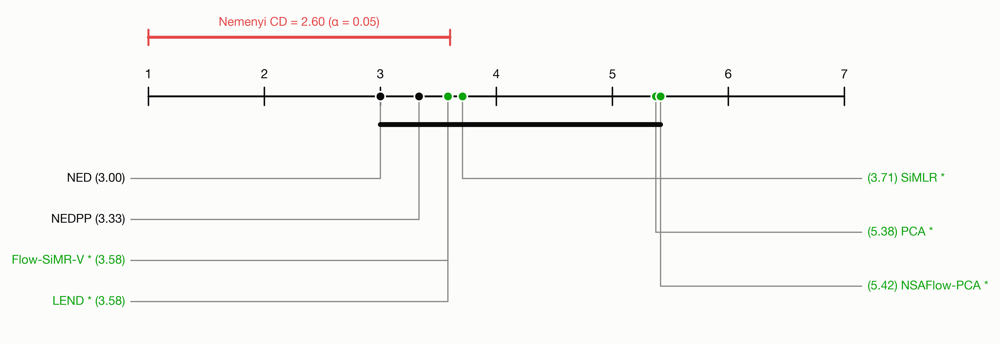
*) mark architectures on the 5-objective non-dominated Pareto frontier.
We evaluate the seven benchmarked architectures defined in Chapter 2 across 12 multi-view benchmarks: six real biomedical and clinical cohorts (ADNI-MCI, MultiOmics [TCGA-BRCA], TCGA-KIRC, Heart, Diabetes, and mfeat) and six synthetic generative regimes with known ground-truth latent coordinates \(\mathbf{U}^*\) and feature supports \(\mathbf{V}_m^*\) (Table 3.1). Every model is evaluated across 3 independent 70/30 stratified or random train/test splits (seeds \(42, 43, 44\)) across three nsa_flow quantile sparsity levels (\(q \in \{\text{None}, 0.5, 0.8\}\), 756 train/test fits), plus 189 paired reruns with non-negative loadings on the three high-dimensional cohorts and a 1,025-configuration hyperparameter sweep on ADNI-MCI (\(N = 1,084\), one seed). To prevent data leakage, all feature standardization (StandardScaler), column completeness filtering (\(\ge 98\%\)), and demographic covariate adjustments (Frisch–Waugh–Lovell residualization (Frisch and Waugh 1933; Lovell 1963) of age, biological sex, and education inside ADNI-MCI) are fitted strictly within each training split and applied out-of-sample to the held-out test split.
deep_ranking_benchmark.csv.
| Cohort | Domain / Modality Structure | N | Views [p_m] | Clinical / Task Target | Best Linear XV vs PCA |
|---|---|---|---|---|---|
| ADNI-MCI | Clinical MRI + Cog | 1,084 | 4 [160, 160, 62, 11] | CogPC1 R2 (MRI Only) | NED (0.209 vs PCA 0.148) |
| MultiOmics (BRCA) | Oncology (mRNA/CNV/RPPA) | 822 | 3 [200, 150, 150] | ER Status Accuracy | NED (0.929 vs PCA 0.915) |
| TCGA-KIRC | Oncology (mRNA/CNV/RPPA) | 467 | 3 [200, 150, 150] | Pathologic Stage Acc | NEDPP (0.690 vs PCA 0.686) |
| Diabetes | Clinical Chemistries | 442 | 2 [5, 5] | 1-Yr Progression R2 | NSAFlow-PCA (0.381 vs PCA 0.351) |
| Heart | Cardiology Vitals + ECG | 297 | 2 [7, 6] | Coronary Disease Acc | NSAFlow-PCA (0.848 vs PCA 0.841) |
| mfeat | Multi-Descriptor Digits | 2,000 | 4 [76, 64, 6, 47] | 10-Class Accuracy | NED (0.973 vs PCA 0.727) |
| Linear | Synthetic (50% Sparse ±) | 1,000 | 3 [100, 80, 60] | Latent R2 & Support F1 | NEDPP (0.975 vs PCA 0.968) |
| Polynomial | Synthetic (Deg-3 Warped) | 1,000 | 3 [120, 80, 50] | Latent R2 & CMC | LEND (0.887 vs PCA 0.864) |
| Sine | Synthetic (Harmonic Warp) | 1,000 | 3 [120, 80, 50] | Latent R2 & CMC | NEDPP (0.947 vs PCA 0.921) |
| Shared+Private | Synthetic (80% Sparse ±) | 1,000 | 3 [160, 60, 30] | Latent R2 & Support F1 | SiMLR (0.949 vs PCA 0.291) |
| NonnegParts | Synthetic (66.7% Non-Neg) | 400 | 3 [120, 45, 30] | Dominant Factor R2 & F1 | SiMLR (0.933 vs PCA 0.893) |
| NonnegWeak | Synthetic (80% Non-Neg) | 400 | 3 [120, 45, 30] | Weak Factor u3 R2 & F1 | SiMLR (0.757 vs PCA 0.125) |
In ADNI-MCI (\(N = 1,084\)) (Mueller et al. 2005; Jack et al. 2008; Weiner et al. 2017), Views 0–2 capture \(382\) regional structural MRI features from the ANTsPyT1w/ANTsPyMM pipelines: the volumes of 160 hierarchical segmentation labels (View 0: cortical, subcortical, ventricular, white-matter and cerebellar labels), the volume-to-surface-area ratio of the same 160 labels (View 1; for a cortical label it tracks thickness, otherwise it is a shape index), and DiReCT cortical thickness averaged in each of 62 Desikan–Killiany–Tourville (DKT) cortical regions (View 2) (Avants et al. 2008, 2011; Tustison et al. 2014; Desikan et al. 2006; Klein and Tourville 2012; Stone et al. 2020, 2024; Marek et al. 2011; Smith et al. 2013), while View 3 comprises eleven neuropsychological scales (ADAS11, ADAS13, ADASQ4 (Rosen et al. 1984), MMSE (Folstein et al. 1975), CDRSB (Morris 1993), TRABSCOR (Reitan 1958), FAQ (Pfeffer et al. 1982), and four Rey Auditory Verbal Learning Test sub-scores RAVLT_immediate, RAVLT_learning, RAVLT_forgetting, RAVLT_perc_forgetting (Rey 1964)). Following Protocol B, the three MRI views align with the cognitive battery during training, but test-set predictions are generated exclusively from structural MRI. In MultiOmics (TCGA-BRCA, \(N =\) 822) (The Cancer Genome Atlas Network 2012) and TCGA-KIRC (\(N = 467\)) (The Cancer Genome Atlas Research Network 2013), mRNA expression (\(p_1 = 200\)), somatic copy-number variation (\(p_2 = 150\)), and RPPA proteomics (\(p_3 = 150\)) predict clinical Estrogen Receptor status and pathologic tumor stage, respectively.
Across the \(B =\) 12 dataset blocks and seven architectures, block-averaged non-parametric Friedman (Friedman 1937) and Iman–Davenport (Iman and Davenport 1980) omnibus tests differentiate the seven models on both the linear subspace probe (\(\chi_F^2 =\) 14.85, \(p =\) \(2.15 \times 10^{-2}\); \(F_F =\) 2.86, \(p =\) \(1.55 \times 10^{-2}\)) and the multi-modal consensus probe (\(\chi_F^2 =\) 13.43, \(p =\) \(3.67 \times 10^{-2}\); \(F_F =\) 2.52, \(p =\) \(2.94 \times 10^{-2}\); Nemenyi Critical Difference \(CD =\) 2.600 at \(\alpha = 0.05\) (Demšar 2006; Nemenyi 1963; Benavoli et al. 2016)). Table 3.2 summarizes the global metrics across all seven models, accompanied by the Demšar Critical Difference diagram (Figure 3.1), the multi-objective speed–accuracy and support–consensus Pareto frontiers (Figure 3.2), and the three-probe performance profile (Figure 3.4).
| Architecture | Friedman Rank ↓ | Linear XV ↑ | RF Axis XV (Drop) ↑ | Consensus U ↑ | Latent CMC ↑ | Support F1 ↑ | Sparsity % ↑ |
|---|---|---|---|---|---|---|---|
| NED | 3.00 | 0.741 | 0.719 (-0.022) | 0.661 | 0.754 | 0.545 | 42.6 |
| NEDPP | 3.33 | 0.729 | 0.709 (-0.020) | 0.622 | 0.699 | 0.513 | 42.1 |
| Flow-SiMR-V | 3.58 | 0.769 | 0.748 (-0.021) | 0.746 | 0.851 | 0.634 | 43.8 |
| LEND | 3.58 | 0.736 | 0.712 (-0.024) | 0.708 | 0.802 | 0.605 | 44.1 |
| SiMLR | 3.71 | 0.752 | 0.735 (-0.017) | 0.744 | 0.897 | 0.550 | 47.5 |
| PCA | 5.38 | 0.644 | 0.601 (-0.044) | 0.648 | 0.710 | 0.308 | 0.0 |
| NSAFlow-PCA | 5.42 | 0.644 | 0.603 (-0.041) | 0.648 | 0.717 | 0.550 | 46.8 |

*) mark architectures on the 5-objective non-dominated Pareto frontier.
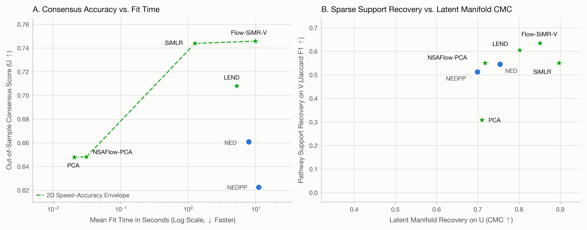
Fit_Seconds, log scale), with the 2D speed–accuracy frontier as a green dashed envelope. (B) Ground-truth feature support recovery on \(\mathbf{V}_m\) (Jaccard F1) against latent manifold recovery on \(\mathbf{U}\) (CMC) across the six synthetic regimes; green stars denote 5-objective Pareto-optimal architectures.
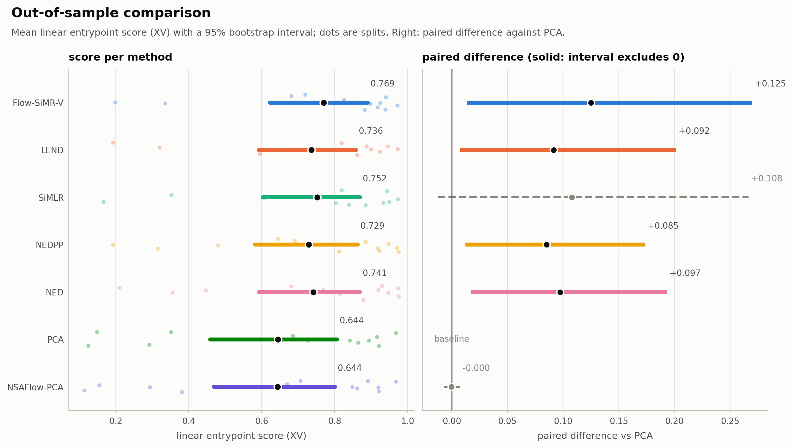
pysimlr.plot_benchmark_uncertainty, seeds averaged per dataset block, 2,000 bootstrap resamples). Left: mean linear entrypoint score (\(\mathbf{X}\mathbf{V}\)) with 95% bootstrap interval and per-cohort points. Right: paired difference (method − PCA) across the 12 cohorts, where solid colored intervals exclude zero.
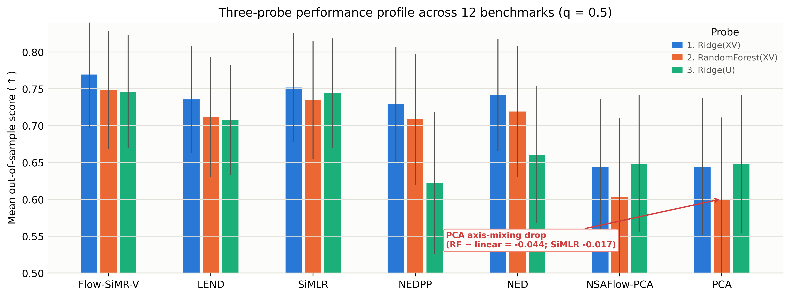
pysimlr.plot_benchmark, mean \(\pm\) SE over cohort blocks at \(q = 0.5\)). Grouped bars compare Subspace Fidelity (Ridge(XV), blue), Single-Axis Interpretability (RandomForest(XV), orange), and Shared Patient Consensus (Ridge(U), green).
Three empirical principles emerge from Table 3.2 and Figures 3.1–3.4:
NED (3.00), NEDPP (3.33), Flow-SiMR-V (3.58), LEND (3.58), against PCA (5.38) and NSAFlow-PCA (5.42) (Figure 3.3). On heterogeneous cohorts such as mfeat (\(p = [76, 64, 6, 47]\)) and Shared+Private (\(p = [160, 60, 30]\)), concatenated PCA reaches a linear score of 0.727 (mfeat accuracy) and 0.291 (Shared+Private \(R^2\)), against 0.973 (NED) and 0.949 (SiMLR) for the best multi-view model. Over the 12 datasets (seeds averaged, Wilcoxon signed-rank against PCA with Holm adjustment, Appendix B), the linear score differs from PCA at \(p < 0.05\) for 0 of 6 non-PCA models.PCA mixes distinct mechanisms across columns. With coordinate-splitting decision trees (RandomForest), PCA loses -0.044 on average across the 12 cohorts (Random Forest minus linear score), falling from 0.125 to -0.000 on the weak sparse factors of NonnegPartsWeak and from 0.148 to 0.042 on ADNI-MCI (72% lower). The smallest drops are SiMLR (-0.017), NEDPP (-0.020).Linear regime ranges from \(F_1 =\) 0.500 (PCA) to 1.000 (NSAFlow-PCA), and reaches 0.875 on NonnegParts (Flow-SiMR-V). On the focal \(20\%\)-active modules, the best \(F_1\) at \(q = 0.8\) is 0.831 on NonnegPartsWeak (Flow-SiMR-V) and 0.660 on Shared+Private (Flow-SiMR-V).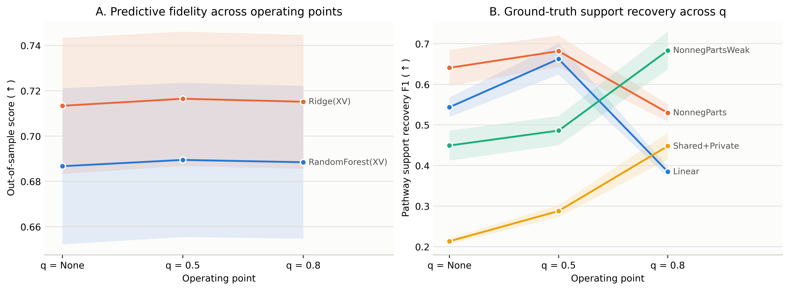
pysimlr.plot_benchmark, mean \(\pm\) SE with direct line-end labels across default-positivity fits at q = None, q = 0.5, and q = 0.8). (A) Out-of-sample linear (Ridge(XV)) and single-axis (RandomForest(XV)) scores across the 12 cohort blocks. (B) Ground-truth feature support recovery (\(F_1\)) across the sparse synthetic regimes.
Numerical checks and 20-seed synthetic benchmarks verify Propositions 1–3 and two-stage support-restricted uniform shrinkage (results_cache/v043_synthetic_theorems.json from scripts/benchmark_synthetic_theorems.py; Section 2.3.1; Section 2.4; Donoho and Johnstone (1994)).
sparseness_alg="soft") yields maximum \(\ell_\infty\) deviation \(1.07 \times 10^{-15}\) from the \(\alpha = 0\) support and weights, confirming exact \(\alpha\)-cancellation. Under uniform-shrunk coordinate floors, continuous pre-retraction soft-thresholding (sparseness_type="soft", _apply_soft_threshold_sparseness) suffers floor erosion: at \(\alpha = 0.99\), the uniform floor reaches 0.0826 above the threshold \(\tau =\) 0.0415, pulling cosine similarity with \(\alpha = 0\) down to 0.666 (Figure 3.6 A).sparseness=None (\(p = 100\)), legacy Euclidean simplex projection subtracts \(\theta =\) 0.1285, zeros 81% of active coordinates, and lowers cosine similarity with the input direction to 0.718, whereas radial simplex normalization retains cosine 1.000 with zero dropped coordinates (Figure 3.6 B).ColumnSupportShrinkageOperator maintains exact orthogonality across \(\alpha \in [0, 1]\) with maximum Gram Frobenius error \(9.99 \times 10^{-16}\), whereas global UniformShrinkageOperator mixes the supports until Frobenius error reaches 1.414 and column cosine reaches 1.000 at \(\alpha = 1\) (Figure 3.6 C).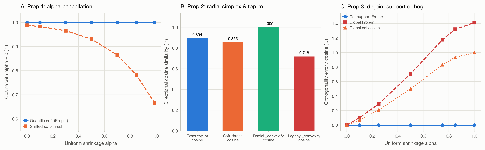
pysimlr v0.43.1 (v043_synthetic_theorems.json). (A) Cosine similarity with the \(\alpha = 0\) weight vector across \(\alpha \in [0, 0.99]\) (\(p = 100, q = 0.30\)): order-statistic quantile soft-thresholding (sparseness_alg="soft") cancels \(\alpha\) exactly while continuous pre-retraction soft-thresholding (sparseness_type="soft") degrades under the uniform shrinkage floor. (B) Comparison of exact top-\(m\) vs. soft-threshold cosine (\(p = 60, m = 20\)) and legacy Euclidean vs. radial _convexify cosine/zeroing at sparseness=None (\(p = 100\)). (C) Gram orthogonality Frobenius error \(\|\mathbf{V}^\top \mathbf{V} - \mathbf{I}_2\|_F\) and inter-column cosine across \(\alpha \in [0, 1]\) on disjoint [40, 40] supports: ColumnSupportShrinkageOperator holds exact zero error while global uniform shrinkage collapses to collinearity.
We next evaluate two-stage support-restricted uniform shrinkage (fit_uniform_shrunk, Donoho–Johnstone Risk Inflation Criterion ric Equation 2.8 vs. plugin shrinkage) across 20 seeds in a four-view generative setting (\(M = 4\), view dimensions (80, 100, 60, 160), \(N_{\text{train}} =\) 60, \(N_{\text{test}} =\) 200, block-correlated noise \(\rho = 0.45\) in blocks of size \(5\)). Design A tests rank \(k = 1\) with 30% active positive signal per view (Table 3.3); Design B tests rank \(k = 2\) with disjoint 25%/25% active supports per view (Table 3.4; Figure 3.7).
v043_synthetic_theorems.json), ordered by mean test \(R^2\).
| Solver Arm (Design A, k = 1) | Test R2 ↑ | Support F1 ↑ | Weight Cos ↑ | Active Frac |
|---|---|---|---|---|
| Legacy hard (q=0.5) | 0.911 ± 0.010 | 0.744 ± 0.011 | 0.928 | 0.499 |
| Two-stage conical (q=0.5, plugin) | 0.898 ± 0.011 | 0.750 ± 0.001 | 0.925 | 0.500 |
| Two-stage radial convex (q=0.5, plugin) | 0.898 ± 0.011 | 0.749 ± 0.002 | 0.925 | 0.500 |
| Legacy Euclidean convex (q=0.3) | 0.891 ± 0.012 | 0.744 ± 0.033 | 0.924 | 0.511 |
| Legacy soft (q=0.3) | 0.880 ± 0.014 | 0.462 ± 0.000 | 0.915 | 1.000 |
| Two-stage conical (q=0.5, RIC) | 0.878 ± 0.014 | 0.750 ± 0.001 | 0.894 | 0.500 |
| Two-stage radial convex (q=0.5, RIC) | 0.877 ± 0.015 | 0.749 ± 0.002 | 0.894 | 0.500 |
| Two-stage conical (q=0.3, plugin) | 0.873 ± 0.015 | 0.600 ± 0.000 | 0.890 | 0.700 |
| Two-stage radial convex (q=0.3, RIC) | 0.845 ± 0.018 | 0.600 ± 0.000 | 0.850 | 0.700 |
| Two-stage conical (q=0.3, RIC) | 0.845 ± 0.019 | 0.600 ± 0.000 | 0.850 | 0.700 |
| Global uniform shrunk (radial convex) | 0.829 ± 0.019 | 0.462 ± 0.000 | 0.839 | 1.000 |
| Global uniform shrunk (conical) | 0.829 ± 0.019 | 0.462 ± 0.000 | 0.838 | 1.000 |
| Two-stage conical (q=0.0, RIC) | 0.829 ± 0.019 | 0.462 ± 0.000 | 0.838 | 1.000 |
v043_synthetic_theorems.json), ordered by mean test \(R^2\).
| Solver Arm (Design B, k = 2) | Mean Test R2 ↑ | Support F1 ↑ | Max Orth Err ↓ | Max Col Cos ↓ | Abs corr(u1, u2) ↓ |
|---|---|---|---|---|---|
| Two-stage radial convex (q=0.5, RIC) | 0.885 ± 0.036 | 0.817 ± 0.075 | 0.0000 | 0.0000 | 0.070 |
| Two-stage conical (q=0.3, plugin) | 0.877 ± 0.087 | 0.752 ± 0.091 | 0.0000 | 0.0000 | 0.069 |
| Two-stage conical (q=0.5, plugin) | 0.877 ± 0.105 | 0.811 ± 0.107 | 0.0000 | 0.0000 | 0.068 |
| Two-stage conical (q=0.5, RIC) | 0.872 ± 0.098 | 0.811 ± 0.107 | 0.0000 | 0.0000 | 0.076 |
| Two-stage radial convex (q=0.3, RIC) | 0.864 ± 0.040 | 0.755 ± 0.066 | 0.0000 | 0.0000 | 0.093 |
| Two-stage conical (q=0.3, RIC) | 0.861 ± 0.085 | 0.752 ± 0.091 | 0.0000 | 0.0000 | 0.090 |
| Legacy Euclidean convex (q=0.5) | 0.855 ± 0.063 | 0.673 ± 0.046 | 0.0853 | 0.0603 | 0.093 |
| Global uniform shrunk (k=2) | 0.845 ± 0.080 | 0.520 ± 0.033 | 0.1617 | 0.1143 | 0.109 |
| Legacy conical hard (q=0.5) | 0.842 ± 0.070 | 0.677 ± 0.017 | 0.1333 | 0.0942 | 0.135 |
| Legacy conical soft (q=0.3) | 0.834 ± 0.081 | 0.639 ± 0.022 | 0.1556 | 0.1100 | 0.153 |
| Two-stage conical (q=0.0, RIC) | 0.831 ± 0.097 | 0.627 ± 0.077 | 0.0000 | 0.0000 | 0.094 |
| Two-stage radial convex (q=0.0, RIC) | 0.820 ± 0.051 | 0.627 ± 0.052 | 0.0000 | 0.0000 | 0.107 |
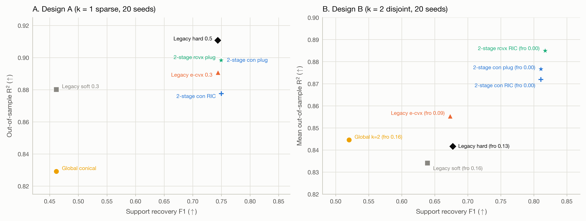
v043_synthetic_theorems.json). (A) Design A (\(k = 1\) sparse, \(N_{\text{train}} = 60, N_{\text{test}} = 200\)): two-stage conical and radial convex arms outperform global shrinkage and legacy soft thresholding. (B) Design B (\(k = 2\) disjoint): two-stage arms achieve zero Gram orthogonality error (fro = 0.0000) alongside higher \(R^2\) and \(F_1\) than legacy global or Euclidean convex baselines.
Across the 20 seeds in Design A (\(k = 1\), two-sided Wilcoxon signed-rank tests), two-stage conical shrinkage at \(q = 0.5\) with plugin \(\alpha\) achieves \(R^2 =\) 0.898 \(\pm\) 0.011 and \(F_1 =\) 0.750 \(\pm\) 0.001 against global uniform shrinkage (0.829 \(\pm\) 0.019, \(F_1 =\) 0.462 \(\pm\) 0.000; \(\Delta R^2 =\) +0.069, \(p =\) \(1.91 \times 10^{-6}\); \(\Delta F_1 =\) +0.288, \(p =\) \(1.19 \times 10^{-5}\)) and exceeds legacy soft-thresholding (0.880 \(\pm\) 0.014; \(\Delta R^2 =\) +0.018, \(p =\) \(1.91 \times 10^{-6}\)). Under theoretical RIC shrinkage at \(q = 0.5\), two-stage conical attains \(R^2 =\) 0.878 \(\pm\) 0.014 and \(F_1 =\) 0.750 \(\pm\) 0.001 (\(\Delta R^2 =\) +0.048, \(p =\) \(1.91 \times 10^{-6}\); \(\Delta F_1 =\) +0.288, \(p =\) \(1.19 \times 10^{-5}\)). Two-stage radial convex (\(q = 0.5\), plugin) reaches \(R^2 =\) 0.898 \(\pm\) 0.011 and \(F_1 =\) 0.749 \(\pm\) 0.002 against legacy Euclidean convex (0.891 \(\pm\) 0.012, \(F_1 =\) 0.744 \(\pm\) 0.033; \(\Delta R^2 =\) +0.008, \(p =\) \(4.77 \times 10^{-5}\); \(\Delta F_1 =\) +0.005, \(p =\) \(2.16 \times 10^{-1}\)).
In Design B (\(k = 2\) disjoint supports), two-stage conical shrinkage (\(q = 0.5\), RIC) achieves mean \(R^2 =\) 0.872 \(\pm\) 0.098 and \(F_1 =\) 0.811 \(\pm\) 0.107 with exact orthogonality (fro = 0.0000, cos = 0.0000), outperforming global uniform shrinkage (0.845 \(\pm\) 0.080, \(F_1 =\) 0.520 \(\pm\) 0.033, fro = 0.1617; \(\Delta R^2 =\) +0.027, \(p =\) \(7.30 \times 10^{-3}\); \(\Delta F_1 =\) +0.290, \(p =\) \(1.91 \times 10^{-6}\); \(\Delta \text{Fro} =\) -0.162, \(p =\) \(1.91 \times 10^{-6}\)) and legacy conical hard thresholding (0.842 \(\pm\) 0.070, \(F_1 =\) 0.677 \(\pm\) 0.017, fro = 0.1333; \(\Delta R^2 =\) +0.030, \(p =\) \(1.21 \times 10^{-3}\); \(\Delta F_1 =\) +0.133, \(p =\) \(8.51 \times 10^{-4}\)). Two-stage radial convex (\(q = 0.5\), RIC) attains \(R^2 =\) 0.885 \(\pm\) 0.036 and \(F_1 =\) 0.817 \(\pm\) 0.075 (fro = 0.0000), improving over legacy Euclidean convex (0.855 \(\pm\) 0.063, \(F_1 =\) 0.673 \(\pm\) 0.046, fro = 0.0853; \(\Delta R^2 =\) +0.030, \(p =\) \(8.20 \times 10^{-5}\); \(\Delta F_1 =\) +0.144, \(p =\) \(1.91 \times 10^{-6}\)).
ADNI-MCI (\(N = 1,084\)): Predicting Cognition from MRI Alone and Attributing the PredictionA primary clinical test of multi-modal representation learning is whether aligning structural neuroimaging with multi-domain cognitive batteries during training yields an anatomical basis that better predicts cognitive severity in new patients who have only undergone an MRI scan (Protocol B). Across \(N = 1,084\) participants with Mild Cognitive Impairment, Table 3.5 compares all seven benchmark models on held-out MRI-only prediction of composite cognitive impairment (CogPC1 \(R^2\), after in-fold adjustment for age, sex, and education), single-axis Random Forest prediction, and mean ridge regression \(R^2\) across all eleven individual neuropsychological scales (ADAS11, ADAS13, ADASQ4, MMSE, CDRSB, TRABSCOR, FAQ, and four RAVLT memory scales).
ADNI-MCI (\(N = 1,084\), Protocol B: training alignment between 3 MRI views and 11 cognitive scales; cognitive views withheld at test time). 3-seed means \(\pm\) SD across seeds from the benchmark (\(q = 0.5\), default positivity) alongside the best configuration per model in the single-seed hyperparameter sweep.
| Architecture | 3-Seed MRI Linear R2 ↑ | MRI RF Axis R2 ↑ | MRI Consensus R2 ↑ | Sweep Peak CogPC1 R2 ↑ | 11-Scale Mean R2 ↑ | MRI Sparsity % ↑ |
|---|---|---|---|---|---|---|
| NED | 0.209 ± 0.027 | 0.099 | 0.068 | 0.256 | 0.116 | 48.6 |
| Flow-SiMR-V | 0.198 ± 0.021 | 0.155 | 0.160 | 0.269 | 0.124 | 48.6 |
| NEDPP | 0.192 ± 0.022 | 0.138 | 0.148 | 0.245 | 0.113 | 48.6 |
| LEND | 0.192 ± 0.029 | 0.141 | 0.172 | 0.259 | 0.117 | 48.6 |
| SiMLR | 0.166 ± 0.043 | 0.140 | 0.173 | 0.259 | 0.118 | 48.6 |
| NSAFlow-PCA | 0.154 ± 0.010 | 0.049 | 0.154 | 0.188 | 0.080 | 50.3 |
| PCA | 0.148 ± 0.010 | 0.042 | 0.148 | 0.187 | 0.085 | 0.0 |
Comparing the unsupervised anatomical baselines against cognitive-aligned SiMR models in Table 3.5 and Figures 3.8–3.13 yields four findings:
PCA on the \(382\) structural MRI features explains \(R^2 =\) 0.148 \(\pm\) 0.010 of out-of-sample cognitive variance (CogPC1) on the linear probe and 0.042 on the single-axis Random Forest probe. Aligning the MRI projections with the 11-scale cognitive battery during training gives, for the four leading models (3-seed means \(\pm\) SD), NED (0.209 \(\pm\) 0.027), Flow-SiMR-V (0.198 \(\pm\) 0.021), NEDPP (0.192 \(\pm\) 0.022), LEND (0.192 \(\pm\) 0.029); the best is +41.2% over PCA. The best single-axis Random Forest score is 0.155 (Flow-SiMR-V), 3.7 times that of PCA. In the single-seed sweep the best configuration reaches 0.2686 (Flow-SiMR-V) and the best linear-family configuration 0.2595 (SiMLR), against 0.1869 for PCA; mean prediction across all eleven scales reaches 0.124 (Flow-SiMR-V) against 0.085 for PCA (+46.0%). These sweep peaks are maxima over many configurations on one split and are optimistic.CogPC1 prediction of the non-negative \(q = 0.85\) fit (all nine MRI columns, \(R^2 =\) 0.170). One column per MRI view carries it. Alone, the predictive column gives \(R^2 =\) 0.122 in volume (component 1), 0.195 in vol/area (component 1) and 0.084 in DiReCT thickness (component 2, 1 region), against at most 0.068 for any other column, and only the vol/area column is not redundant with the rest (unique \(R^2\) +0.040). Component numbers are not identifiable across fits, so the refits below follow each view’s predictive column rather than a fixed index. Across 20 half-sample refits, the predictive vol/area basis selects these features in at least half of them (fraction of refits): L entorhinal (DKT parcellation): 0.95; L temporal lobe: 0.90; L inferior parietal (DKT cortex label): 0.85; L entorhinal (DKT cortex label): 0.80; R entorhinal (DKT cortex label): 0.80; R entorhinal (DKT parcellation): 0.75. These are mostly entorhinal, temporal-lobe and inferior parietal measures, the regions where atrophy is expected in prodromal Alzheimer’s disease (Dickerson et al. 2009; Jack et al. 2018). DiReCT thickness tells the same story less clearly. Its first principal component explains 58% of the variance across the 62 regions (mean inter-region correlation 0.55), and consensus component 1 correlates 0.87 with subject-mean thickness, so hard-assigning each region to its largest structure coefficient places 62 / 0 / 0 regions on components 1 / 2 / 3: a display of the global factor, not of localisation (Panel B). The thickness basis itself is unstable under the default collapse penalty: it keeps two or fewer regions in 8 of 20 refits (median held-out \(R^2\) 0.118). Non-negative region sums on positively correlated features typically correlate above the penalty’s threshold of 0.3, so the penalty pushes those columns towards one or two regions. With collapse_weight = 0 the predictive thickness basis keeps a median of 9 regions (two or fewer in 1 refit), its median \(R^2\) rises to 0.144, and its most frequent regions are (fraction of refits) L entorhinal: 0.55; L supramarginal: 0.45 (Panel D). No single thickness region replicates in more than 0.55 of refits, so the thickness map is a pattern, not a list of identified regions (docs/audit/evidence/adni_global_factor_check.csv). For reference, unthresholded non-negative fits are 67% sparse on the DKT view without rotation and 67% with Varimax, against 0% for dense PCA.ADNI-MCI (adni_mci_axis_alignment_controls.csv, axis_alignment_control_metrics): (i) a PCA-rotated score control rotates the learned scores \(\mathbf{Z} = [\mathbf{X}_m \mathbf{V}_m]\) by their in-fold principal-component eigenvectors, which leaves the linear probe unchanged (largest difference \(1.08 \times 10^{-7}\)) and lowers the single-axis Random Forest score for 2 of 5 models; (ii) a support-shuffled basis control permutes the rows of each \(\mathbf{V}_m\) within its view, preserving sparsity, weight magnitudes and \(\mathbf{V}_m^\top \mathbf{V}_m\), and lowers the Random Forest CogPC1 \(R^2\) for 5 of 5 models: Flow-SiMR-V (0.151 \(\to\) 0.091), LEND (0.119 \(\to\) 0.059), NEDPP (0.134 \(\to\) 0.096), NSAFlow-PCA (0.033 \(\to\) -0.059), SiMLR (0.094 \(\to\) 0.028). Unshuffled Random Forest scores are 1.0 to 4.8 times that of PCA.select_rank(..., criterion="latent_reliability") (Section 2.7; Equation 2.10) across 20 half-sample refits (docs/audit/evidence/adni_rank_selection.csv, selection margin 0.2) selects \(k =\) 2 under non-negative estimation (positivity="positive") and \(k =\) 2 under signed estimation (positivity="either"). At \(k = 2\) under non-negativity, out-of-bag univariate latent reliabilities are 0.891 and 0.975 (gains 0.438 and 0.630), multivariate reliability is 0.945 (gain 0.520), and all_coupled = True (passed = True). At \(k = 3\) under non-negativity, univariate reliabilities are 0.928, 0.502, and 0.920 (gains 0.516, 0.219, and 0.652): Component 2 drops to minimum reliability 0.502 (gain 0.219), multivariate reliability drops to 0.790 (gain declines from 0.520 at \(k = 2\) to 0.402, failing multivariate monotonicity), and all_coupled = False (passed = False), so the fixed \(k = 3\) diagnostic fits below isolate Components 1 and 3 as the two high-reliability axes. Under signed estimation (positivity="either"), \(k = 2\) achieves reliabilities 0.697 and 0.603 (multivariate gain 0.456, passed = True), whereas at \(k = 3\) reliabilities drop to 0.882, 0.645, and 0.197 (minimum gain -0.053, multivariate gain 0.362, passed = False).
loading_inference) strictly excludes zero; (ii) named biomarker panels report features selected via Meinshausen–Bühlmann stability selection at threshold \(\pi_{\text{thr}} = 0.80\) with expected false selections \(E[\text{false}] \le 1.0\); and (iii) non-negative displays present hard-assignment OLEE loadings accompanied by the loading_margin certainty metric.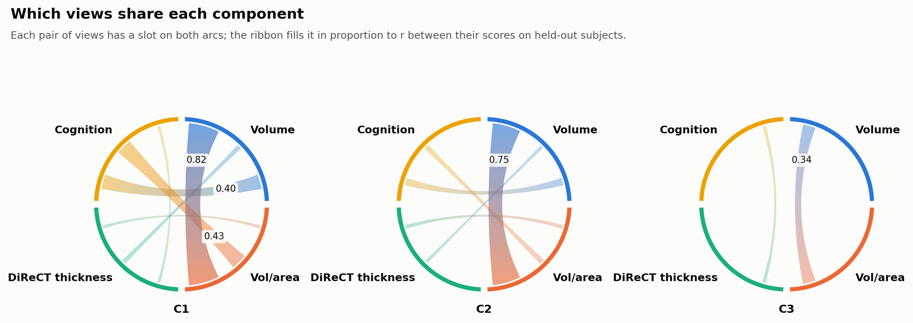
ADNI-MCI alignment learns selective cross-view couplings rather than collapsing all views onto one dense factor (pysimlr.plot_view_chord, \(N_{\text{test}} = 326\), Protocol B, SiMLR, \(k = 3\), \(q = 0.85\)). Each view (Volume, Vol/area = volume-to-surface-area ratio, DiReCT thickness, Cognition) occupies a fixed arc with one slot per partner view, and ribbons fill slots in proportion to held-out Pearson \(r\).
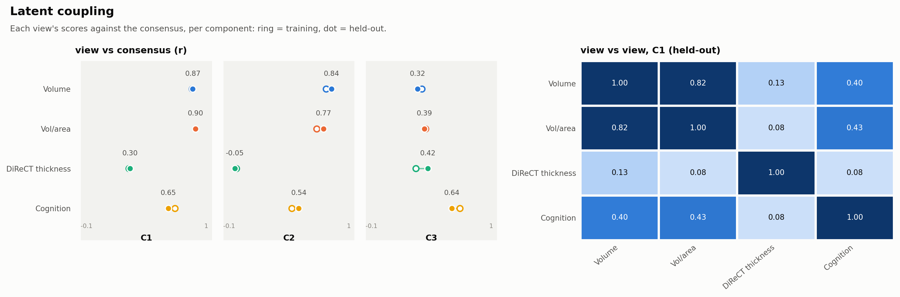
ADNI-MCI modalities (pysimlr.plot_latent_coupling, Protocol B). Hollow rings denote training coupling, filled dots mark held-out coupling, and the right panel displays the held-out view-by-view correlation matrix.
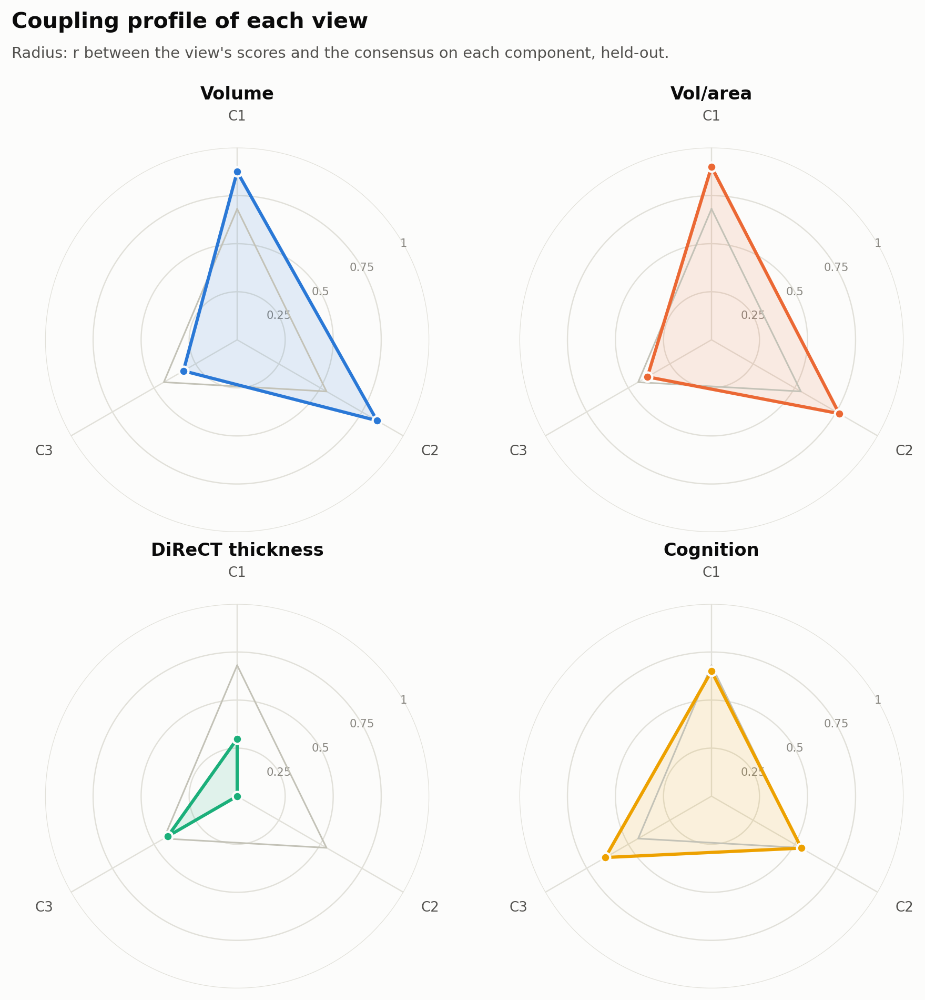
ADNI-MCI axes (pysimlr.plot_component_radar). Colored polygons trace individual modalities and the grey polygon marks the mean over views.
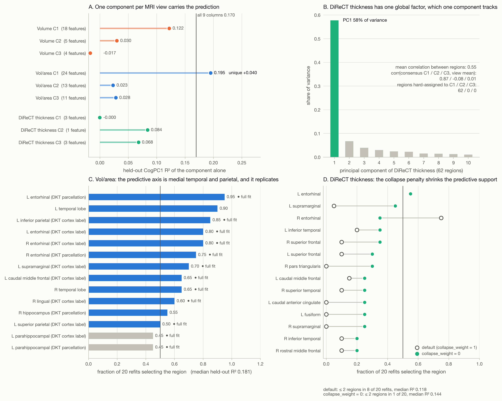
collapse_weight = 0 is required to recover the DiReCT cortical-thickness pattern (ADNI-MCI, Protocol B, SiMLR, \(k = 3\), non-negative, \(q = 0.85\), \(w = 0.50\); \(N_{\text{train}} = 758\), \(N_{\text{test}} = 326\); paper_adni_attribution.py). (A) Held-out CogPC1 \(R^2\) of each MRI component alone and unique \(R^2\) loss when dropped from all nine. (B) Variance spectrum of DiReCT thickness over the 62 DKT regions showing one global factor tracked by one consensus component. (C) Vol/area selection frequency across 20 half-sample refits (colored \(\ge 0.5\); dot = full fit). (D) DiReCT thickness selection frequency under the default collapse penalty (hollow) and collapse_weight = 0 (filled).
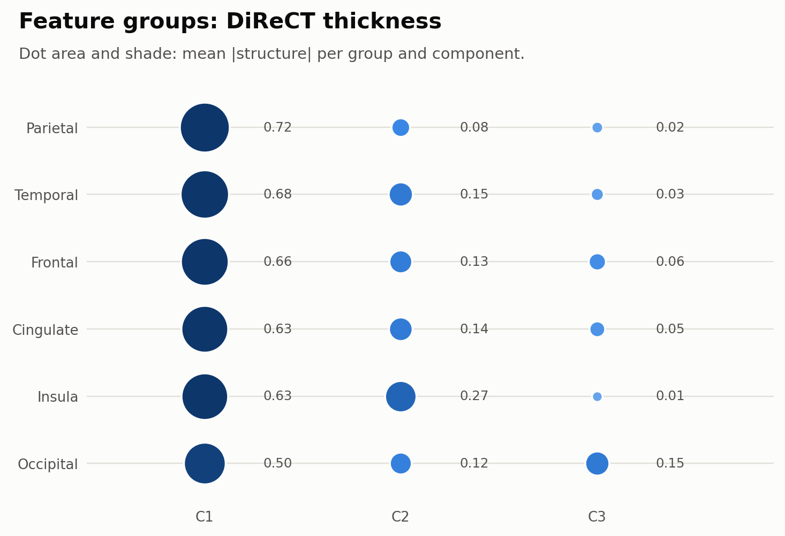
ADNI-MCI cognitive-aligned thickness basis (pysimlr.plot_feature_groups, Protocol B). Bars report mean \(|\text{structure}|\) across the 62 DKT cortical parcels grouped into Temporal, Parietal, Frontal, Cingulate, Occipital, and Insula lobes.
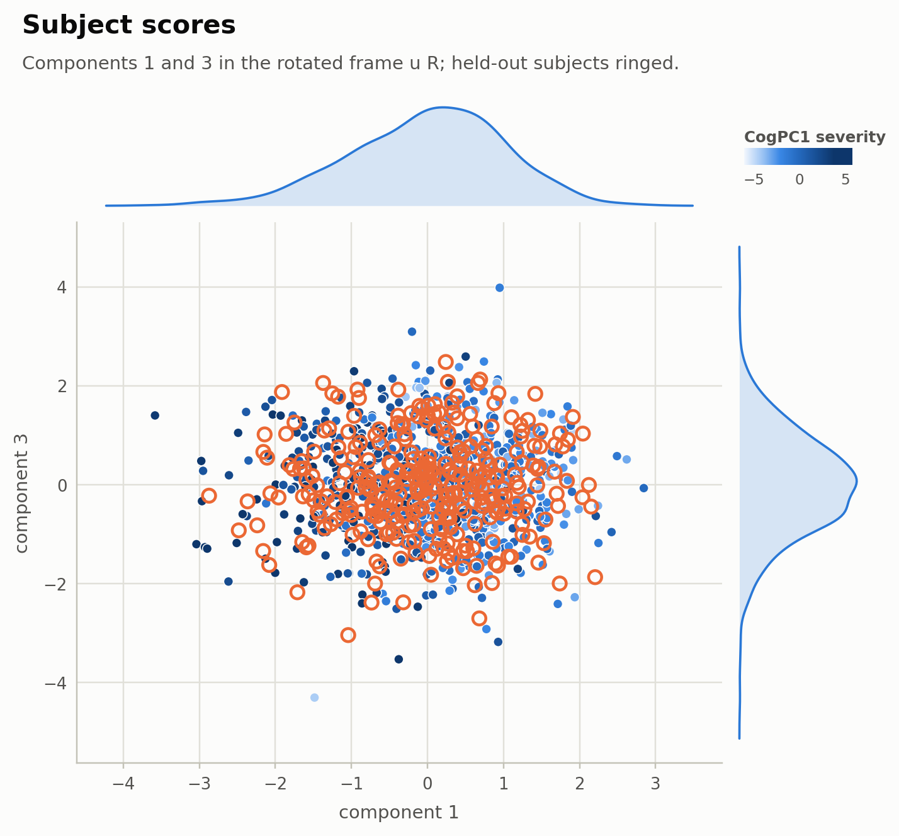
ADNI-MCI participants align along the cognitive severity gradient in the rotated score plane of Components 1 and 3, the two high-reliability axes at \(k = 3\) (pysimlr.plot_scores, \(\mathbf{u}\mathbf{R}\)). Points are shaded by CogPC1 severity, with marginal KDE densities and ringed held-out MCI participants (\(N_{\text{test}} = 326\)).
TCGA-BRCA, TCGA-KIRC) and Patient-Level Clinical AttributionTo verify that the same architectural principles generalize beyond neuroimaging to molecular oncology and clinical tabular medicine, Table 3.6 compares all seven models across the six real cohorts, Figure 3.14 reports cross-cohort linear entrypoint scores (pysimlr.plot_benchmark), Figure 3.15 and Figure 3.16 map reproducible feature-to-component structure (pysimlr.plot_top_features and pysimlr.plot_feature_chord), and Figure 3.17 displays the hard-assigned OLEE loadings \(\mathbf{L}_m\) across Heart and Diabetes modalities.
XV) with multi-modal consensus performance (U) in parentheses across all six real biomedical cohorts (3-seed mean from deep_ranking_benchmark.csv, higher is better ↑).
| Architecture | ADNI-MCI R2 ↑ | TCGA-BRCA Acc ↑ | TCGA-KIRC Acc ↑ | Diabetes R2 ↑ | Heart Acc ↑ | mfeat Acc ↑ |
|---|---|---|---|---|---|---|
| LEND | 0.192 (0.172) | 0.899 (0.905) | 0.686 (0.641) | 0.320 (0.302) | 0.819 (0.756) | 0.861 (0.814) |
| Flow-SiMR-V | 0.198 (0.160) | 0.925 (0.915) | 0.681 (0.693) | 0.335 (0.292) | 0.826 (0.793) | 0.898 (0.809) |
| SiMLR | 0.166 (0.173) | 0.802 (0.789) | 0.605 (0.615) | 0.352 (0.313) | 0.819 (0.804) | 0.839 (0.770) |
| NEDPP | 0.192 (0.148) | 0.922 (0.913) | 0.690 (0.648) | 0.315 (0.080) | 0.811 (0.804) | 0.971 (0.812) |
| NED | 0.209 (0.068) | 0.929 (0.922) | 0.681 (0.688) | 0.355 (0.245) | 0.815 (0.796) | 0.973 (0.838) |
| NSAFlow-PCA | 0.154 (0.154) | 0.919 (0.929) | 0.669 (0.662) | 0.381 (0.382) | 0.848 (0.837) | 0.706 (0.712) |
| PCA | 0.148 (0.148) | 0.915 (0.922) | 0.686 (0.671) | 0.351 (0.350) | 0.841 (0.837) | 0.727 (0.732) |
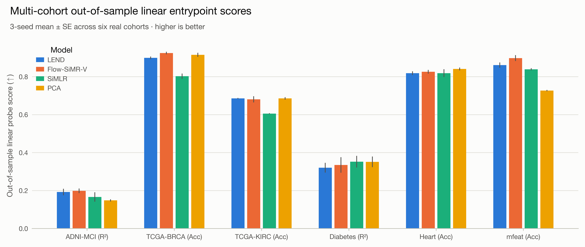
pysimlr.plot_benchmark, 3-seed mean \(\pm\) SE from deep_ranking_benchmark.csv). Grouped bars compare LEND, Flow-SiMR-V, SiMLR, and PCA across ADNI-MCI, TCGA-BRCA, TCGA-KIRC, Diabetes, Heart, and mfeat.
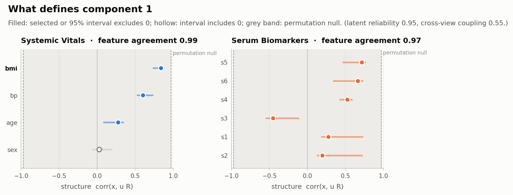
LEND structure correlations isolate metabolic and glycemic drivers across systemic vitals and serum biomarkers in Diabetes (pysimlr.plot_top_features, results_cache/nsa_v_loadings.json). Bars plot \(r(\mathbf{x}_{mj}, (\mathbf{U}\mathbf{R})_1)\) with 95% subsample intervals (\(n_{\text{sub}} = 50\)), the shaded permutation null band (\(n_{\text{perm}} = 20\)), and stability-selected features in bold.
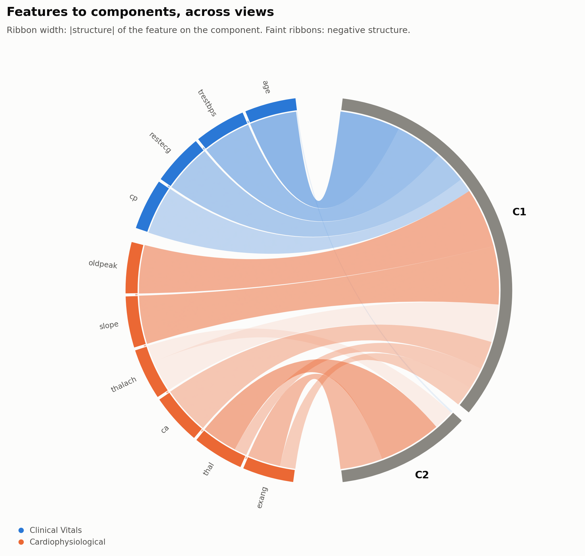
C1 and C2 (pysimlr.plot_feature_chord, Heart cohort, results_cache/nsa_v_loadings.json). Ribbons link clinical vitals (cp chest pain, sex, age, restecg) and stress markers (thal, ca, exang, oldpeak, thalach) filtered by subsample stability selection.
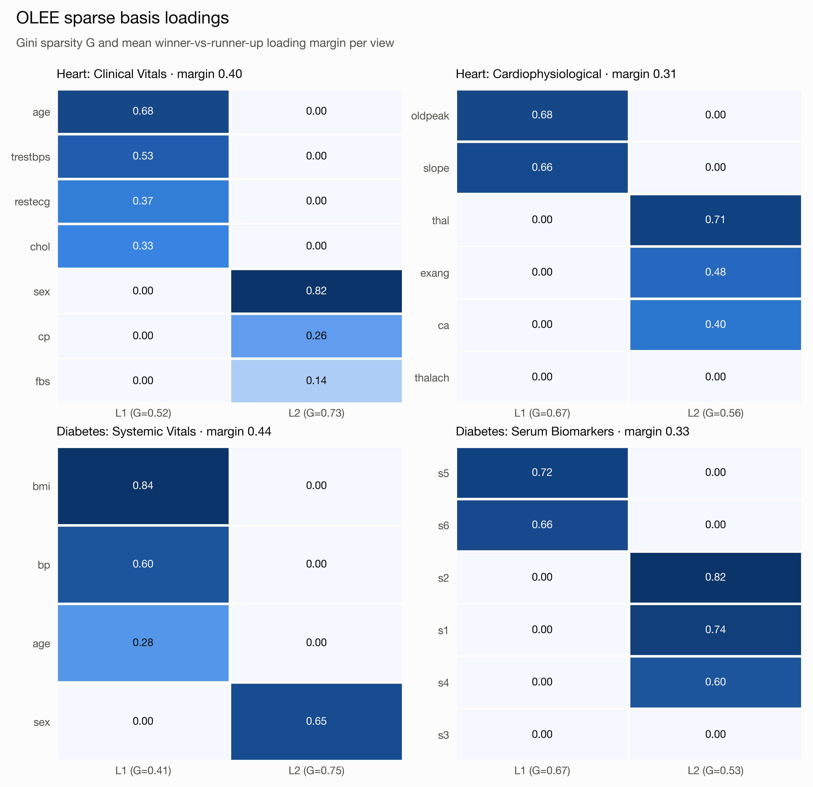
LEND OLEE loadings \(\mathbf{L}_m\) separate clinical feature blocks across Heart and Diabetes views with high Gini sparsity (results_cache/nsa_v_loadings.json). Heatmaps plot per-view loading matrices sorted by component assignment, reporting per-column Gini sparsity \(G\) and mean winner-vs-runner-up loading margins.
In MultiOmics (TCGA-BRCA, \(N =\) 822), out-of-sample Estrogen Receptor classification accuracy on the linear entrypoint is 92.5% \(\pm\) 1.2% (Flow-SiMR-V), 89.9% \(\pm\) 1.2% (LEND) and 92.2% \(\pm\) 1.3% (NEDPP), against 91.5% \(\pm\) 1.8% for PCA (3-seed means \(\pm\) SD); the sparse non-negative dictionaries \(\mathbf{V}_m\), tri-modal feature chord, and view-level quality radar are examined in Appendix A. In TCGA-KIRC (\(N = 467\)), pathologic stage classification on the consensus embedding \(\mathbf{U}\) is 64.1% \(\pm\) 1.1% for LEND against 67.1% \(\pm\) 1.5% for PCA. On compact clinical cohorts, Diabetes (\(N =\) 442) reaches \(R^2 =\) 0.352 for SiMLR against 0.351 for PCA, and Heart (\(N =\) 297) reaches accuracy 0.848 for NSAFlow-PCA and 0.819 for SiMLR. Figure 3.15, Figure 3.16, and Figure 3.17 show the stability-selected structure correlations, multi-view feature-to-component chord, and OLEE loadings \(\mathbf{L}_m\) across Heart (out-of-bag latent_reliability 0.73 and 0.57) and Diabetes (latent_reliability 0.95 and 0.83); while the linear entrypoint \(\mathbf{Z}_{m,\text{lin}} = \mathbf{X}_m \mathbf{V}_m\) maps individual observations into the latent consensus space, the OLEE loadings \(\mathbf{L}_m\) decompose individual patient profiles into exact additive risk attributions \(c_{m,i,j,l} = x_{m,i,j} l_{m,j,l}\) without post-hoc Monte Carlo approximations (Wachter et al. 2018; Karimi et al. 2021; Pearl 2009). Complete parameter sensitivity ablations (the \(w \in [0.01, 0.95]\) trade-off curve, basis diagnostics, stability rank selection across \(k\), and synthetic noise recovery) are in Appendix B.
To measure the empirical impact of Propositions 1–3 on real biomedical cohorts (pysimlr v0.43.1, scripts/run_real_data_v043.py), we re-benchmark standard simlr (Part A) and evaluate two-stage uniform shrinkage fit_uniform_shrunk (Part B) across all six real cohorts (ADNI-MCI, MultiOmics [TCGA-BRCA], TCGA-KIRC, Heart, Diabetes, mfeat) over three random seeds (42, 43, 44).
In Part A (part_a_comparison_summary.csv, Table 3.7), 107 of 108 simlr fits (99.1%) converge; the single non-convergent run is TCGA-KIRC under positivity="either", sparseness=None, seed 44 (Stop_Reason = "max_iter"). Across the 81 matched fits (27 cohort-by-positivity-by-sparseness cells \(\times\) 3 seeds) comparing v0.43.1 against the pre-v0.43 cache, signed positivity="either" improves mean consensus metric by +0.007 (+0.003 at \(q = 0.5\) and +0.019 at \(q = 0.8\)), while non-negative positivity="positive" ranges from -0.026 to +0.007 (\(\max |\Delta| =\) 0.026). Under radial simplex normalization (positivity="convex") on the three high-dimensional biomedical cohorts, MultiOmics (TCGA-BRCA) reaches peak consensus accuracy 0.894 and mean linear accuracy 0.916 (mean consensus 0.890), ahead of positivity="positive" (peak consensus 0.870, mean linear 0.895) and positivity="either" (peak consensus 0.836, mean linear 0.824).
part_a_comparison_summary.csv, 3-seed means per positivity and quantile sparseness target \(q\), comparing v0.43.1 consensus metric against pre-v0.43 cache where matched).
| Cohort | Positivity | q | v0.43.1 U ↑ | Sparsity % ↑ | D(V) ↓ | Conv | Pre-v0.43 U | Δ U |
|---|---|---|---|---|---|---|---|---|
| ADNI-MCI | convex | 0.5 | 0.162 | 85.2 | 0.1610 | 1.00 | – | – |
| ADNI-MCI | convex | 0.8 | 0.162 | 89.6 | 0.1196 | 1.00 | – | – |
| ADNI-MCI | convex | None | 0.162 | 85.2 | 0.1610 | 1.00 | – | – |
| ADNI-MCI | either | 0.5 | 0.173 | 48.6 | 0.0002 | 1.00 | 0.167 | +0.007 |
| ADNI-MCI | either | 0.8 | 0.189 | 77.9 | 0.0008 | 1.00 | 0.182 | +0.007 |
| ADNI-MCI | either | None | 0.145 | 0.0 | 0.0002 | 1.00 | 0.146 | -0.001 |
| ADNI-MCI | positive | 0.5 | 0.171 | 90.8 | 0.0015 | 1.00 | 0.175 | -0.004 |
| ADNI-MCI | positive | 0.8 | 0.187 | 91.1 | 0.0034 | 1.00 | 0.192 | -0.004 |
| ADNI-MCI | positive | None | 0.171 | 90.8 | 0.0015 | 1.00 | 0.175 | -0.004 |
| Diabetes | either | 0.5 | 0.313 | 0.0 | 0.0148 | 1.00 | 0.313 | +0.000 |
| Diabetes | either | 0.8 | 0.313 | 0.0 | 0.0148 | 1.00 | 0.313 | +0.000 |
| Diabetes | either | None | 0.313 | 0.0 | 0.0148 | 1.00 | 0.313 | +0.000 |
| Heart | either | 0.5 | 0.804 | 0.0 | 0.0133 | 1.00 | 0.804 | +0.000 |
| Heart | either | 0.8 | 0.804 | 0.0 | 0.0133 | 1.00 | 0.804 | +0.000 |
| Heart | either | None | 0.804 | 0.0 | 0.0133 | 1.00 | 0.804 | +0.000 |
| MultiOmics | convex | 0.5 | 0.894 | 77.3 | 0.1042 | 1.00 | – | – |
| MultiOmics | convex | 0.8 | 0.882 | 85.1 | 0.0785 | 1.00 | – | – |
| MultiOmics | convex | None | 0.894 | 77.3 | 0.1042 | 1.00 | – | – |
| MultiOmics | either | 0.5 | 0.789 | 50.0 | 0.0001 | 1.00 | 0.781 | +0.008 |
| MultiOmics | either | 0.8 | 0.836 | 80.0 | 0.0004 | 1.00 | 0.813 | +0.023 |
| MultiOmics | either | None | 0.781 | 0.0 | 0.0000 | 1.00 | 0.778 | +0.003 |
| MultiOmics | positive | 0.5 | 0.864 | 81.6 | 0.0026 | 1.00 | 0.867 | -0.003 |
| MultiOmics | positive | 0.8 | 0.870 | 86.0 | 0.0016 | 1.00 | 0.866 | +0.004 |
| MultiOmics | positive | None | 0.864 | 81.6 | 0.0026 | 1.00 | 0.867 | -0.003 |
| TCGA-KIRC | convex | 0.5 | 0.655 | 83.7 | 0.0849 | 1.00 | – | – |
| TCGA-KIRC | convex | 0.8 | 0.657 | 87.7 | 0.1121 | 1.00 | – | – |
| TCGA-KIRC | convex | None | 0.655 | 83.7 | 0.0849 | 1.00 | – | – |
| TCGA-KIRC | either | 0.5 | 0.615 | 50.0 | 0.0001 | 1.00 | 0.608 | +0.007 |
| TCGA-KIRC | either | 0.8 | 0.655 | 80.0 | 0.0008 | 1.00 | 0.610 | +0.045 |
| TCGA-KIRC | either | None | 0.596 | 0.0 | 0.0000 | 0.67 | 0.605 | -0.009 |
| TCGA-KIRC | positive | 0.5 | 0.676 | 78.3 | 0.0029 | 1.00 | 0.669 | +0.007 |
| TCGA-KIRC | positive | 0.8 | 0.662 | 87.3 | 0.0023 | 1.00 | 0.688 | -0.026 |
| TCGA-KIRC | positive | None | 0.676 | 77.2 | 0.0031 | 1.00 | 0.669 | +0.007 |
| mfeat | either | 0.5 | 0.770 | 48.2 | 0.0006 | 1.00 | 0.773 | -0.003 |
| mfeat | either | 0.8 | 0.767 | 77.7 | 0.0011 | 1.00 | 0.726 | +0.042 |
| mfeat | either | None | 0.778 | 0.0 | 0.0003 | 1.00 | 0.771 | +0.007 |
In Part B (part_b_uniform_shrunk_summary.csv, Table 3.8; Figure 3.18), we evaluate 96 fit_uniform_shrunk runs across all six cohorts and ranks \(k \in \{1, 2, 3\}\) (capped at \(k \in \{1, 2\}\) for Heart and Diabetes). Under positivity="conical", 48 of 48 fits converge with maximum Gram defect \(D(\mathbf{V}_m) \le\) \(3.79 \times 10^{-14}\) and maximum inter-column cosine 0.000. Under radial simplex positivity="convex", 45 of 48 fits converge with maximum inter-column cosine 0.000 and maximum Gram defect 0.482 (non-zero defect arises because radial \(\ell_1\)-simplex columns have unequal \(\ell_2\) norms when disjoint support sizes differ). The three non-converged convex fits are all on Diabetes (\(p = [5, 5]\)) at \(k = 2\) (Stop_Reason = "no_descent" across seeds 42, 43, 44, consensus 0.273, linear 0.353), whereas positivity="conical" converges in all \(3/3\) splits with consensus 0.331, linear 0.405, and Gram defect \(1.78 \times 10^{-15}\). Pooled across cohorts for conical, mean consensus score rises from 0.463 (\(k = 1\), linear 0.524) to 0.530 (\(k = 2\), linear 0.641) and 0.572 (\(k = 3\), linear 0.681). At each cohort’s target rank (\(k = 2\) for Heart and Diabetes, \(k = 3\) for ADNI-MCI, MultiOmics, TCGA-KIRC, and mfeat), fit_uniform_shrunk (conical) reaches linear scores of 0.925 (MultiOmics), 0.931 (mfeat), 0.830 (Heart), 0.662 (TCGA-KIRC), 0.405 (Diabetes), and 0.209 (ADNI-MCI).
fit_uniform_shrunk) benchmark across six biomedical cohorts and ranks \(k \in {1, 2, 3}\) (part_b_uniform_shrunk_summary.csv, 3-seed means).
| Cohort | Positivity | k | U ↑ | XV ↑ | Spar % ↑ | D(V) ↓ | Max Cos ↓ | Alpha | Conv |
|---|---|---|---|---|---|---|---|---|---|
| ADNI-MCI | conical | 1 | 0.158 | 0.200 | 0.0 | 0.00e+00 | 0.000 | 0.119 | 1.00 |
| ADNI-MCI | conical | 2 | 0.138 | 0.181 | 50.0 | 1.52e-14 | 0.000 | 0.117 | 1.00 |
| ADNI-MCI | conical | 3 | 0.170 | 0.209 | 66.7 | 1.30e-14 | 0.000 | 0.102 | 1.00 |
| ADNI-MCI | convex | 1 | 0.159 | 0.197 | 0.0 | 0.000 | 0.000 | 0.119 | 1.00 |
| ADNI-MCI | convex | 2 | 0.142 | 0.156 | 50.0 | 0.479 | 0.000 | 0.117 | 1.00 |
| ADNI-MCI | convex | 3 | 0.157 | 0.182 | 66.7 | 0.218 | 0.000 | 0.101 | 1.00 |
| Diabetes | conical | 1 | 0.050 | 0.045 | 0.0 | 0.00e+00 | 0.000 | 0.050 | 1.00 |
| Diabetes | conical | 2 | 0.331 | 0.405 | 50.0 | 1.78e-15 | 0.000 | 0.050 | 1.00 |
| Diabetes | convex | 1 | 0.067 | 0.232 | 0.0 | 0.000 | 0.000 | 0.050 | 1.00 |
| Diabetes | convex | 2 | 0.273 | 0.353 | 50.0 | 0.083 | 0.000 | 0.050 | 0.00 |
| Heart | conical | 1 | 0.822 | 0.833 | 0.0 | 0.00e+00 | 0.000 | 0.050 | 1.00 |
| Heart | conical | 2 | 0.811 | 0.830 | 50.0 | 7.11e-15 | 0.000 | 0.050 | 1.00 |
| Heart | convex | 1 | 0.826 | 0.830 | 0.0 | 0.000 | 0.000 | 0.050 | 1.00 |
| Heart | convex | 2 | 0.811 | 0.819 | 50.0 | 0.050 | 0.000 | 0.050 | 1.00 |
| MultiOmics | conical | 1 | 0.782 | 0.792 | 0.0 | 0.00e+00 | 0.000 | 0.224 | 1.00 |
| MultiOmics | conical | 2 | 0.780 | 0.906 | 50.0 | 1.78e-14 | 0.000 | 0.250 | 1.00 |
| MultiOmics | conical | 3 | 0.868 | 0.925 | 66.7 | 5.63e-15 | 0.000 | 0.230 | 1.00 |
| MultiOmics | convex | 1 | 0.769 | 0.789 | 0.0 | 0.000 | 0.000 | 0.224 | 1.00 |
| MultiOmics | convex | 2 | 0.763 | 0.911 | 50.0 | 0.045 | 0.000 | 0.246 | 1.00 |
| MultiOmics | convex | 3 | 0.820 | 0.923 | 66.7 | 0.040 | 0.000 | 0.229 | 1.00 |
| TCGA-KIRC | conical | 1 | 0.577 | 0.648 | 0.0 | 0.00e+00 | 0.000 | 0.337 | 1.00 |
| TCGA-KIRC | conical | 2 | 0.584 | 0.681 | 50.0 | 2.31e-14 | 0.000 | 0.350 | 1.00 |
| TCGA-KIRC | conical | 3 | 0.591 | 0.662 | 66.7 | 7.70e-15 | 0.000 | 0.298 | 1.00 |
| TCGA-KIRC | convex | 1 | 0.577 | 0.650 | 0.0 | 0.000 | 0.000 | 0.337 | 1.00 |
| TCGA-KIRC | convex | 2 | 0.600 | 0.671 | 50.0 | 0.205 | 0.000 | 0.350 | 1.00 |
| TCGA-KIRC | convex | 3 | 0.598 | 0.678 | 66.7 | 0.283 | 0.000 | 0.308 | 1.00 |
| mfeat | conical | 1 | 0.390 | 0.628 | 0.0 | 0.00e+00 | 0.000 | 0.050 | 1.00 |
| mfeat | conical | 2 | 0.538 | 0.845 | 50.0 | 5.48e-15 | 0.000 | 0.053 | 1.00 |
| mfeat | conical | 3 | 0.659 | 0.931 | 66.7 | 3.77e-15 | 0.000 | 0.051 | 1.00 |
| mfeat | convex | 1 | 0.336 | 0.635 | 0.0 | 0.000 | 0.000 | 0.050 | 1.00 |
| mfeat | convex | 2 | 0.517 | 0.846 | 50.0 | 0.172 | 0.000 | 0.051 | 1.00 |
| mfeat | convex | 3 | 0.606 | 0.895 | 66.7 | 0.045 | 0.000 | 0.051 | 1.00 |
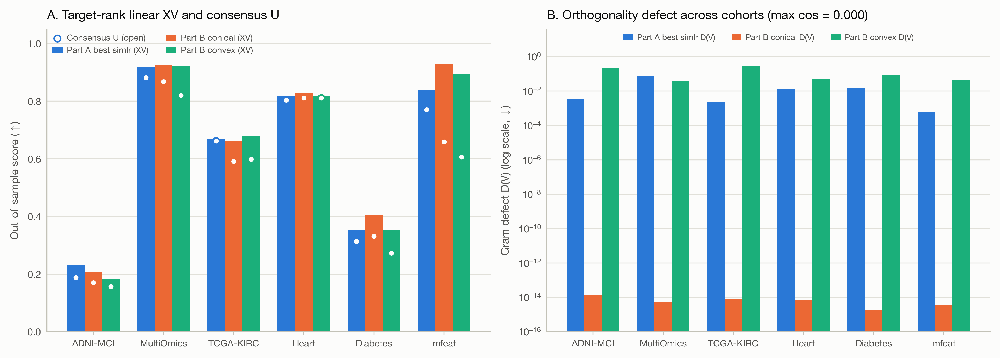
fit_uniform_shrunk matches or approaches standard SiMLR linear probe performance while reducing inter-column cosine overlap to 0.000 across all six biomedical cohorts (part_a_comparison_summary.csv, part_b_uniform_shrunk_summary.csv). (A) Target-rank out-of-sample linear probe (XV, bars) and consensus (U, open circles) scores across cohorts (k = 2 for Heart and Diabetes, k = 3 otherwise) comparing Part A best simlr against Part B conical and convex. (B) Normalized Gram defect \(D(\mathbf{V}_m)\) on a log scale across cohorts (maximum inter-column cosine 0.000 for both Part B regimes is reported in the panel title and Table 3.8).